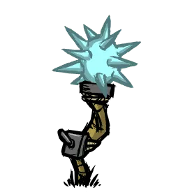

晨星锤
用于夜间战斗的晨光。


- 晨星锤（nightstick）是一种原版的可制作装备。
- 攻击力28.9，耐久6分钟
- 晨星锤的攻击是“带电”的。对干燥的目标造成 1.5 倍物理伤害，对潮湿的目标造成 2.5 倍物理伤害。
- 晨星锤的耐久不随攻击次数而降低，而是随着时间降低。此外，手持晨星锤时能够提供照明，也只有手持时才会计算耐久度。
- 【星极】【星源】装备【晨星锤】时，其耐久消耗降低至10%。这意味着被【星极】【星源】使用的【晨星锤】将拥有60分钟的耐久度。
晨星锤
nightstick

分类：手部
解锁方式：炼金引擎
制作材料：
①伏特羊角*1
②电子元件*2
③硝石*2